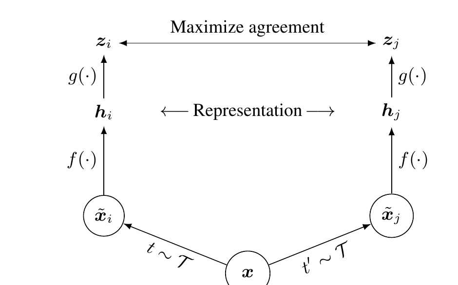

On this page
You know me, I am gonna talk about learning without labels now! How do you teach a model when you have no labels and labeling would cost you a fortune?
Think about it. You can download a million images from the internet in an afternoon. Labeling them takes months and an army of annotators. Labels are expensive. Structure is free. The world has structure baked in, so SSL says: stop begging for labels, the data itself can be the teacher.
The trick is simple. Take one image, make two different distorted copies of it. Teach the model that these two copies are the same thing. That is the whole game. If the model can recognize that a cropped, recolored, blurry photo of a dog is still the same dog, it must have learned something real about dogs. No labels involved.
The contrastive family: SimCLR, MoCo (Momentum Contrast), which fixes SimCLR's batch-size hunger with a queue, and BYOL which pulls off contrastive learning without any negatives at all.
Contrastive learning lives in the embedding space. You take two augmented views of the same image, that is a positive pair. Every other image in the batch is a negative. The training signal says: drag the positive pair together, shove everything else apart.
Here is the mental picture. Imagine every image is a point on the surface of a ball. Two views of the same photo should sit right next to each other. Different photos should spread out. After training, photos of similar things end up clustered together on that ball, and you never once showed the model a label.
This is the whole contrastive mechanism. The loss falls as the twin is dragged toward the anchor and the strangers are shoved away, and the top-1 check reads yes whenever the twin is the anchor's nearest neighbor. Every point lives on this disk because embeddings are L2 normalized, so similarity is just cosine similarity and the model cannot cheat by making vectors huge.
SimCLR's loss is called NT-Xent: normalized temperature-scaled cross entropy. Fancy name, simple idea. For one positive pair, the loss is:
The numerator asks: how similar is my view to its true partner? The denominator asks: how similar is my view to every other view in the batch, including the partner? The loss is the negative log of that fraction. Reading the symbols: ℓi,j is the loss for one pair, view i and its twin view j; the z's are the views themselves and sim is the cosine similarity between two views; the sum runs over all 2N views in the batch (N images, two views apiece), and the 1[k≠i] indicator counts every view except view i itself, so a view never competes with itself. It is just cross entropy where the "correct class" is the positive pair. The temperature τ sharpens or softens the comparison: a low temperature obsesses over the hardest negative, a high temperature spreads the vote. SimCLR sets it to 0.5, the useful middle.
Here is the actual mechanism. A toy embedding disk: the blue dot is one photo of a cat, the anchor. The green dot is an augmented twin of that same photo. The red dots are twelve other photos. Training pulls the twin toward the anchor and shoves the strangers out to fill the disk, and the loss falls as the twin becomes the anchor's nearest neighbor.
Reading the map: the circle is the embedding space. Each dot is one photo's embedding, pinned to the rim because embeddings are normalized to length 1. Blue is the anchor photo, green is its augmented twin, red are the 12 other photos. The trail behind the red marker is the loss falling as training runs.
SimCLR is the "of course" version of this idea. Take a batch of N images. Make two augmented views of each. That gives you twice as many views. For each view, exactly one of the other views is its positive pair. The rest are negatives. Ask the model to pick the positive out of the crowd. It is stupid easy and gives you a fast win.
The augmentations do the heavy lifting. Random crop, flip, color jitter, blur. The model cannot match the views by pixel statistics because the augmentations destroy those, so it has to learn actual content. Weak augmentations, weak features. Remember that.
The positive pair is a promise: "these two are the same thing." Weak distortion keeps the promise but teaches nothing, because matching pixels is enough. Strong distortion forces the model to learn real content, until the promise breaks and the views are strangers wearing the same nametag. Designing that middle ground for your own data is the job.
The augmentations do the heavy lifting, so here is the tradeoff made concrete. A toy image distorted by random crop, rotation, and color jitter, with two fresh views side by side and their cosine similarity underneath. With no distortion the views are identical and the task is trivial. With too much the views stop being the same thing. The whole method lives in the middle.
SimCLR also adds a small projection head on top of the encoder: two linear layers with a ReLU. Here is the funny part. You train the contrastive loss on the projection output, then you throw the head away and use the encoder output for downstream tasks. The head is a sacrificial layer. It absorbs the contrastive objective so the encoder stays general. Do not skip it, it buys a few points for free.
class ProjectionHead(nn.Module):
def __init__(self, in_dim, hidden_dim=2048, out_dim=128):
super().__init__()
self.net = nn.Sequential(
nn.Linear(in_dim, hidden_dim),
nn.ReLU(),
nn.Linear(hidden_dim, out_dim),
)
def forward(self, x):
return self.net(x) # trained with contrastive loss, discarded afterOne subtle detail in the code: you must exclude self-similarity. Every vector is perfectly similar to itself, similarity 1.0, and that would dominate the softmax. The standard trick is to mask the diagonal of the similarity matrix with a huge negative number before the softmax.
def nt_xent_loss(z1, z2, temperature=0.5):
# z1, z2: [B, D] projected views, already L2 normalized
B = z1.size(0)
z = torch.cat([z1, z2], dim=0) # [2B, D]
sim = torch.mm(z, z.t()) / temperature # [2B, 2B] cosine similarity
# positive of row i is row i+B (and vice versa)
labels = torch.cat([torch.arange(B, 2 * B), torch.arange(B)]).to(z.device)
# kill self-similarity so the diagonal cannot win
sim.fill_diagonal_(-9e15)
return F.cross_entropy(sim, labels)The NT-Xent code in 'The NT-Xent Loss' is only the loss. The method is bigger than the loss, so here is the paper's own drawing of the whole pipeline.
Read it bottom to top. At the bottom, one image becomes two augmented views. In the middle, the same encoder turns each view into a representation, and the same projection head maps it one step further. At the top, the loss pulls the twin vectors together and pushes every other pair apart.

Rebuilt from Figure 2 of Chen et al. (ICML 2020). arXiv:2002.05709
Figure 2, verbatim caption: "A simple framework for contrastive learning of visual representations. Two separate data augmentation operators are sampled from the same family of augmentations (t ~ T and t' ~ T) and applied to each data example to obtain two correlated views. A base encoder network f(⋅) and a projection head g(⋅) are trained to maximize agreement using a contrastive loss. After training is completed, we throw away the projection head g(⋅) and use encoder f(⋅) and representation h for downstream tasks."
N = 4. The paper used N = 4096.sim(zi, zj) the similarity: compare every pairτ the temperature: lower τ, sharper pushexp(sim(zi,zj)τ) the twin pair: pull togetherΣk exp(sim(zi,zk)τ) everyone else: push apartℓ the loss; zi, zj the twin views; zk every view in the batchlog logarithmRebuilt from Figure 2 of Chen et al. (ICML 2020). arXiv:2002.05709
N = 4 stand-in, not a real run. In its scenes, bright cells mean similar, the crossed-out diagonal is masked self-similarity, the red row is one view's similarities, arrows show pull-together and push-apart, hollow dots are where embeddings sat before the gradient step, and the grayed box is the discarded head.SimCLR has one embarrassing requirement: it needs a huge batch size. Negatives come from the current batch, so with a batch of 256 you only get 510 negatives, and the learning signal is weak. The SimCLR paper used a batch of 4096. That is eight GPUs minimum. Most of us do not have that.
MoCo fixes this with a queue. Instead of taking negatives from the current batch, it keeps a queue of tens of thousands of embeddings from past batches. Batch size of 256, queue of 65,536, you get the best of both worlds.
But there is a catch. Embeddings from ten batches ago were made by an older encoder, so they are stale. MoCo's answer is a second encoder for the keys, updated with a slow exponential moving average of the query encoder:
The momentum is a knob set to 0.999 in practice. It barely moves the key encoder each step, so the queued embeddings stay consistent with each other. The query encoder learns normally by gradient descent. Three lines of code:
@torch.no_grad()
def momentum_update(query_encoder, key_encoder, m=0.999):
for p_q, p_k in zip(query_encoder.parameters(), key_encoder.parameters()):
p_k.data = m * p_k.data + (1 - m) * p_q.dataThat is the whole trick. A rolling memory of negatives plus a slow encoder that keeps the memory honest.
Okay, here is where it gets weird. BYOL asks: what if we drop the negatives entirely? Just pull the two views together and never push anything apart. Sounds like it should collapse instantly, every image mapping to the same point. It does not.
BYOL uses two networks. The online network has an encoder, a projector, and a predictor. The target network has just an encoder and a projector. The online network tries to predict the target network's representation of the other view. The target network is never trained by gradients. It is a slow moving average of the online network, updated with the same EMA rule as MoCo. Gradients flow only through the online path.
The loss is cosine similarity between the online prediction of one view and the target projection of the other view. Since both are normalized, it simplifies to squared distance on the sphere.
Call the online network's output the prediction and the target network's output the target. the loss is just squared distance between two unit vectors, and it is computed in both directions: view 1 predicts view 2's target, and view 2 predicts view 1's target.
Here q1 and q2 are the online predictions for the two views: the online path is encoder, then projector, then predictor, and it gets gradients. z1 and z2 are the target projections for the two views: the target path is frozen, with no gradients. In the display, cos stands for the code's F.cosine_similarity. The two cosine terms are the two directions: q1 predicts z2, and q2 predicts z1, the symmetric loss. The outer form is the code's own form of the squared distance between two unit vectors stated in the paragraphs before this line.
Now the real question. Why does this not collapse? If there are no negatives, why does the model not just output the same vector for everything and get zero loss? Three things conspire to stop it.
Here is one BYOL training step, the whole thing:
def byol_step(x1, x2, online, target, m=0.99):
# online path: encoder -> projector -> predictor (gets gradients)
q1 = online.predictor(online.projector(online.encoder(x1)))
q2 = online.predictor(online.projector(online.encoder(x2)))
with torch.no_grad(): # target path: frozen, no gradients
z1 = target.projector(target.encoder(x1))
z2 = target.projector(target.encoder(x2))
# symmetric loss: q1 predicts z2, q2 predicts z1
loss = 2 - 2 * (F.cosine_similarity(q1, z2).mean()
+ F.cosine_similarity(q2, z1).mean()) / 2
loss.backward() # only online weights move
with torch.no_grad(): # then the target slowly follows
for p_o, p_t in zip(online.parameters(), target.parameters()):
p_t.data = m * p_t.data + (1 - m) * p_o.data
return lossNow watch the phenomenon that setup exists to prevent. Twenty embeddings on a disk, one hundred training steps. The naive version, gradients flowing everywhere, drains every dot into one: zero loss, nothing learned. BYOL's stop-gradient plus predictor keeps the dots spread.
Reading the map: the circle is the embedding space, with 20 photos pinned to the rim as 20 dots. Blue dots train with BYOL's stop-gradient and predictor; red dots train the naive way, gradients flowing everywhere. The bar is the spread of the dots: full means spread out, zero means collapsed into one.
20 dots drain into a single dot and the loss flatlines at zero, a perfect score for learning nothing. With BYOL's stop-gradient and predictor, the dots keep drifting and nothing collapses.Notice what is missing. No negatives, no queue, no giant batch requirement. BYOL works fine at batch size 256. That alone makes it the practical choice when you do not have a GPU cluster.
So what do you actually get? The standard way to measure this is linear evaluation: freeze the pretrained encoder, train only a linear classifier on top with real labels, and report ImageNet top-1 accuracy (the share of images whose correct label is the model's first guess). Here are the numbers from the original papers, ResNet-50 on ImageNet, trained 1000 epochs:
| Method | ImageNet top-1 |
|---|---|
| Supervised baseline (for reference) | 76.5% |
| SimCLR (batch 4096) | 69.3% |
| BYOL (batch 4096) | 74.3% |
Read that again. BYOL with zero labels gets to 74.3%, about two points shy of fully supervised training at 76.5%. That is the headline result. The model learned almost everything it needed from the structure of the data alone. The linear probe just names the clusters.
And these features transfer. Take a BYOL encoder pretrained on ImageNet, fine-tune it on 1% of the labels, and it beats a supervised model trained from scratch on that same 1%. That is the actual use case: pretrain on your mountain of unlabeled data, label a thimbleful, fine-tune.
Augmentations are the method. This is the part people underestimate. SimCLR and BYOL do not learn from the images, they learn from the difference between the two views. The strength tradeoff from the SimCLR section is the whole design problem here.
For natural images the standard recipe is random crop plus color jitter plus blur. For your own data, say sensor signals or spectrograms, you have to design augmentations that preserve identity. There is no universal recipe. This is where most failed SSL projects actually fail.
SimCLR is hungry for batch size. With 256 negatives the signal is thin. The paper used 4096. If you cannot afford that, use MoCo's queue or switch to BYOL, which does not care about batch size. Do not run SimCLR with batch 64 and wonder why it does nothing.
Temperature is not a detail. Too low and the softmax becomes a spike, gradients vanish except on the hardest negatives. Too high and everything looks the same, no learning signal. SimCLR uses 0.5, MoCo uses 0.07 to 0.2. Tune it, it matters more than most architecture choices.
Be honest about the evaluation protocol. Linear probe freezes the encoder and trains one linear layer. Fine-tuning trains everything. Semi-supervised fine-tuning on 1% of labels is yet another number. Papers report the most flattering one. When you compare methods, compare the same protocol, or you are comparing apples to orangutans.
SSL is not magic on small data. These methods shine when you have far more unlabeled data than labeled data. If you only have 10k images total, just label them and train supervised. The pretraining overhead is not worth it.
You now have a feature extractor that learned from nothing but structure. The natural next step is to squeeze those features into a smaller model for deployment. That is knowledge distillation: a big teacher model, in this case your SSL-pretrained encoder, teaching a small student to mimic its representations. Same idea as here, matching vectors on a sphere, but now the goal is compression instead of learning from scratch.